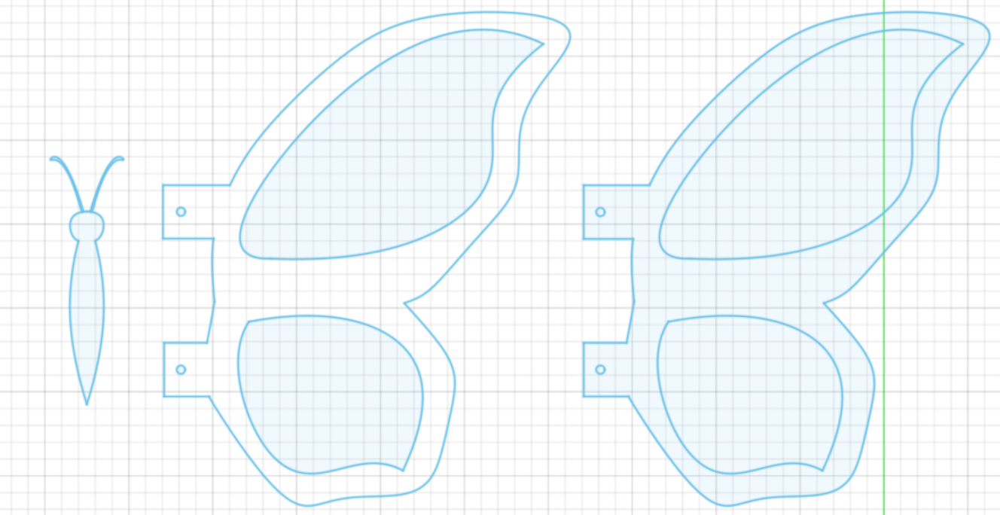
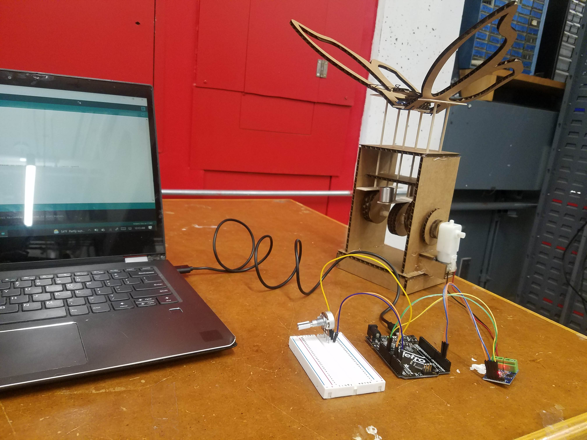
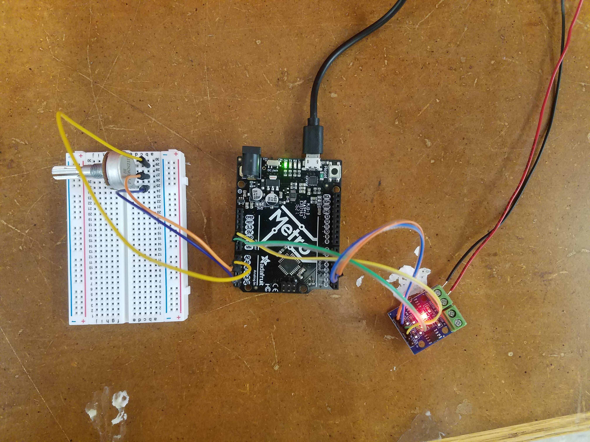

Week 4: Microcontroller Programming
This week was an introduction to microcontroller programming.
Before diving into my project for the week, I wanted to showcase my new and improved website that I spent an entire day (literally) working on. I completely changed the format of the website and based the look on the "Nature Portfolio Template" from W3 Schools. I modified the template a lot though and personalized it too. For comparison, here is the old website next to the new and improved one!


Now, onto the main topic. We had the option to build off the previous assignment, but my project from last week unfortunately did not work as intended despite the time and effort I put into it. So, I made some changes to the design hoping to make it work. To start off, this involved making modifications to the original sketch in Fusion 360. For example, I implemented the following changes:
- Increased diameter from 2.5mm to 4mm to allow the skewers to move up and down freely
- Increased the distance between the center column of skewer holes and the flanking columns
- Bottom plate: From (Edge)-20-(1st hole)-25-(2nd hole)-25-(4th hole)-20-(Edge) to (Edge)-10-(1st hole)-35-(2nd hole)-35-(4th hole)-10-(Edge)
- Top plate: From (Edge)-25-(1st hole)-25-(2nd hole)-25-(4th hole)-25-(Edge) to (Edge)-15-(1st hole)-35-(2nd hole)-35-(4th hole)-15-(Edge)
- Made the two rows of skewer holes equidistant from the center line for both the top and bottom plates. In the previous design, one row was on the center line and the other was offset from the center line by 10mm.
- Increased the distance between the two rows of skewer holes from 10mm to 30mm
- Decreased the distance from the center of the circles attached to the dowel to the center of the hole for the dowel from 15mm to 10mm
- Carved out portions of the wings to make them lighter. This was to reduce the weight difference between the wings and the body of the butterfly
- Designed the wings so they had holes (outside of the main body of the wing) that could be used to connect them to the body of the butterfly. Previously, I had used a drill bit and made the holes manually in the body of the wing itself
- Designed and laser-cut a body for the butterly, complete with antennae. Previously, I had used a popsicle stick glued to the center column of skewer holes as the body
- 
- Desined and laser-cut other miscellaneous pieces, including the housing for the motor and pieces to more efficiently and effectively translate motor movement into rotation of the dowel. Previously, I had attached the motor to the dowel using a mess of hot glue and duct tape)
Some other changes I made included the following:
- Securing the dowels to significantly longer and wider popsicle sticks to avoid them getting stuck randomly on the circles attached to the dowel
- Attached weights to the center (body) column so that the weight of the wings would not prevent the body from falling into the lowered position
- Used rubber bands instead of string to attach the wings. Unlike last week, each wing was not tied separately and directly to the body of the butterfly
- I also made several other minor, less noticeable tweaks. For example, after one the wires attached to the motor broke last week, I obtained a new motor and soldered wires to it, being careful that they were properly attached this time before applying hot glue
I'm really happy with the way the project came out. Here are some pictures of this week's project, with some close-ups!


Here are some comparison photos (with last week's project on the left, next to this week's project on the right):


I powered the motor using the adafruit microcontroller connected to an L9110 H Bridge Power Driver to drive it. The code I had uploaded on the microcontroller was from class on Thursday, so the motor ran for 4 seconds and turned off for 2 seconds (rinse and repeat).
Here is a short video of the motor turning on and off following this pattern:
And here is the code, taken from the class website:
const int A1A = 3; // define pin 3 for A-1A (speed)
const int A1B = 4; // define pin 4 for A-1B (direction)
void setup() {
pinMode(A1A, OUTPUT); // specify these pins as outputs
pinMode(A1B, OUTPUT);
digitalWrite(A1A, LOW); // start with the motors off
digitalWrite(A1B, LOW);
}
void loop() {
// start the motor
digitalWrite(A1A, HIGH);
digitalWrite(A1B, LOW);
delay(4000); // allow the motor to run for 4 seconds
// stop the motor
digitalWrite(A1A, LOW); // setting both pins LOW stops the motor
digitalWrite(A1B, LOW);
delay(2000); // keep the motor off for 2 seconds
// start the motor in opposite direction
digitalWrite(A1A, LOW); // A1A needs to be LOW to switch direction
digitalWrite(A1B, HIGH);
delay(4000); // allow the motor to run for 4 seconds
// stop the motor
digitalWrite(A1A, LOW); // setting both pins LOW stops the motor
digitalWrite(A1B, LOW);
delay(2000);
}
As a side note, this was my first time using the motor to run the kinetic sculpture! I was happy and relieved at the same time that it worked as intended.
I wanted to slow down and speed up the flapping of the wings to see which looked more natural, so I chose to create a circuit with a potentiometer. I followed the instructions on the class website and uploaded the code that was posted there to the microcontroller. One thing to note is that the potentiometer did not fit into the A0, A2, and A4 pins on the microcontroller, so I improvised and used a breadboard to complete the circuit. Also, I used my computer to power the circuit so I used 5V instead of 9V.
This is what the finished circuit looked like:
 Here is the code:
/* Code to run motor in one direction based on potentiometer reading.
* Motor driver speed control on pin 3 (direction LOW by default)
* Potentiometer plugged into A0, A2, and A4 on Metro M0 (or similar).
*/
void setup() {
pinMode(3, OUTPUT);
pinMode(A0, OUTPUT); //This will be GND for the potentiometer
pinMode(A4, OUTPUT); //This will be 3.3V for the pot
digitalWrite(A0, LOW);
digitalWrite(A4, HIGH);
}
void loop() {
int pot_value = analogRead(A2); //pot wiper is on A2
int motor_speed = map(pot_value, 0, 1023, 255, 0); // map motor_level to pot_value so that zero corresponds to lowest speed
analogWrite(3, motor_speed);
delay(1);
}
With the circuit now complete and the code uploaded onto the microcontroller, I turned the dial of the potentiometer from the off position to the full speed position. Apologies for the noise in the background, but here is a video of me playing around with the potentiometer:
That is all for this week. Thank you!
Powered by w3.css
Mohammed Mutaher 2022